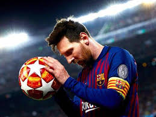

FUTBOL
Juego entre dos equipos de once jugadores cada uno, cuyo objetivo es hacer entrar en la portería contraria un balón que no puede ser tocado con las manos ni con los brazos, salvo por el portero en su área de meta. balompié, balón.
En el fútbol, las capacidades físicas más importantes son la fuerza, velocidad, resistencia y flexibilidad. Estas cualidades permiten a los jugadores realizar esfuerzos intensos y repetidos durante el partido, contribuyendo a su rendimiento en el cam
El balón de fútbol es un elemento fundamental en el deporte del fútbol. Se trata de una esfera de tamaño estándar que debe cumplir con ciertos requisitos de peso, circunferencia y presión.

Lionel Andrés Messi Cuccittini, conocido como Leo Messi, es un futbolista argentino que juega como delantero o centrocampista. Desde 2023, integra el plantel del Inter Miami de la MLS canadoestadounidense. Es también internacional con la selección de Argentina, de la que es capitán.
